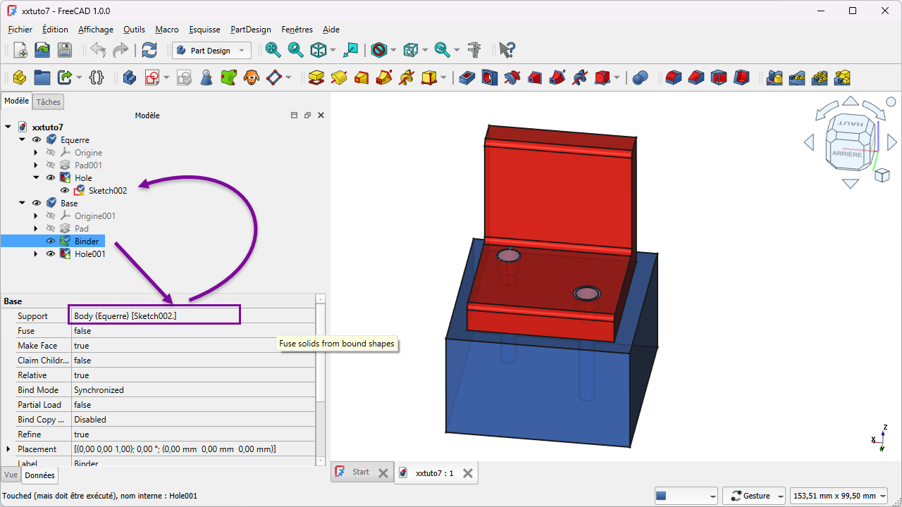

Multibody: meerdere delen in één bestandMulticorps : plusieurs pièces, un fichierMultibody: several parts in one file
Een echte behuizing bestaat uit meerdere delen: een bak, een deksel, misschien een knop. In FreeCAD krijgt elk deel zijn eigen Body. Maar de delen moeten wél op elkaar passen — en samen meeveranderen als je iets wijzigt. Daarvoor bestaat de gekoppelde vorm, die geometrie van het ene deel doorgeeft aan het andere.Un vrai boîtier a plusieurs pièces : une boîte, un couvercle, un bouton. Chaque pièce = un corps. La forme liée les fait correspondre et évoluer ensemble.A real enclosure has several parts: a box, a lid, maybe a knob. Each part gets its own Body. The shape binder keeps them matching and updating together.
- meerdere bodies in één document beherengérer plusieurs corps dans un documentmanage several bodies in one document
- de actieve body herkennen en wisselenreconnaître et changer le corps actifrecognise and switch the active body
- een gekoppelde vorm maken zodat delen samen wijzigencréer une forme liée pour lier les piècesmake a shape binder so parts change together
- weten wanneer je booleaanse bewerkingen gebruiktsavoir quand utiliser les opérations booléennesknow when to use boolean operations
Workbench: Part Design. Elke Body is één deel; je document kan er meerdere bevatten.Atelier : Part Design. Chaque corps = une pièce ; un document peut en contenir plusieurs.Workbench: Part Design. Each Body is one part; a document can hold several.
Commando's: Part Design → Body maken (nieuw deel) en Part Design → Sub-vormbinder maken (gekoppelde vorm). De actieve body staat vet in de modelboom — dubbelklik een body om hem actief te maken. Spatie verbergt/toont een body.Commandes : Part Design → Créer un corps et Part Design → Créer une sous-forme liée. Corps actif = gras ; double-clic pour l'activer ; Espace = afficher/masquer.Commands: Part Design → Create body and Part Design → Create a sub-shape binder. The active body is bold; double-click to activate; Space hides/shows a body.
- Maak een tweede deel: Part Design → Body maken en hernoem hem (bv. "Deksel").Créez un 2ᵉ corps et renommez-le.Make a second part: Create body and rename it.
- Zorg dat het nieuwe deel de actieve body is (vet).Le nouveau corps doit être actif (gras).Make the new part the active body (bold).
- Selecteer in de boom de geometrie van het andere deel → Sub-vormbinder maken. Ze verschijnt nu in je actieve body als gekoppelde referentie.Sélectionnez la géométrie de l'autre corps → Sous-forme liée.Select the other part's geometry in the tree → Create a sub-shape binder.
- Verberg het andere deel met spatie en bouw verder op de gekoppelde vorm.Masquez l'autre corps (Espace) et continuez.Hide the other part with Space and build on the binder.
01Eén document, meerdere delenUn document, plusieurs piècesOne document, several parts
In FreeCAD is een Body één massief deel. Een behuizing met een bak en een deksel zijn dus twee bodies in hetzelfde bestand. Eén ervan is de actieve body (vet in de modelboom): daar komen je nieuwe bewerkingen terecht. Je wisselt van actieve body door erop te dubbelklikken, en je verbergt een body met de spatiebalk zodat je ongestoord aan het andere deel werkt.Un corps = une pièce. Boîte + couvercle = deux corps. Le corps actif (gras) reçoit les nouvelles opérations ; double-clic pour changer, Espace pour masquer.A Body is one solid part. A box plus a lid are two bodies in the same file. One is the active body (bold) where new features land; double-click to switch, Space to hide.
02De gekoppelde vorm: één deel volgt het andereLa forme liéeThe shape binder: one part follows the other
Hier zit de echte kracht. Met een gekoppelde vorm (de sub-vormbinder, in FreeCAD "SubShapeBinder") haal je geometrie van het ene deel binnen in het andere — als een levende referentie. Wijzig je het bronstuk, dan past de gekoppelde vorm zich automatisch aan. Zo laat je het deksel de bak volgen: maak je de bak langer, dan groeit het deksel mee.La forme liée (sous-forme liée / SubShapeBinder) importe la géométrie d'un corps dans un autre comme référence vivante : modifiez la source, la copie suit. Le couvercle suit la boîte.Here's the real power. A shape binder (the sub-shape binder, FreeCAD's "SubShapeBinder") pulls geometry from one part into another as a live reference. Change the source and the binder follows. The lid follows the box.

03Toepassing: bak + deksel als twee delenApplication : boîte + couvercleApplication: box + lid as two parts
Je behuizing uit H12 wordt nu netjes opgesplitst: de bak is body 1, het deksel body 2. In het deksel maak je een gekoppelde vorm van de bovenrand van de bak, zodat het deksel exact die maten overneemt. De speling (H12) teken je daar bovenop. Resultaat: één parameter wijzigen aan de bak, en het deksel blijft passen — geen dubbel werk, geen maatfouten.La boîte (H12) se scinde : boîte = corps 1, couvercle = corps 2. Une forme liée du bord de la boîte fait suivre le couvercle ; le jeu (H12) se dessine par-dessus.Your H12 enclosure splits cleanly: the box is body 1, the lid body 2. In the lid, a shape binder of the box rim copies its size; you draw the clearance (H12) on top. Change one box parameter and the lid still fits.
04Als je solids écht moet samenvoegen of uitsnijdenFusionner ou découper des solidesWhen you must merge or cut solids
Soms wil je twee solids tot één versmelten, of de ene uit de andere snijden. Dat zijn booleaanse bewerkingen. Schakel naar de Part-workbench en kies Part → Booleaans → Vereniging / Verschil / Doorsnede (union/cut/common). Vereniging plakt samen, verschil snijdt weg, doorsnede houdt enkel het gemeenschappelijke deel over. Voor passende behuizingsdelen die toch apart printbaar blijven, gebruik je meestal de gekoppelde vorm; voor het écht combineren van massa gebruik je booleans.Pour fondre ou découper des solides : atelier Part, Part → Booléen → Union / Découpe / Commun. La forme liée relie sans fusionner ; les booléens fusionnent vraiment.To fuse two solids or cut one from another, use boolean operations: the Part workbench, Part → Boolean → Union / Cut / Common. The shape binder links without merging; booleans truly combine mass.
Eén Body = één deel. Wil je delen laten samenwerken zonder ze te versmelten, gebruik dan een gekoppelde vorm: dat is een parametrische link tussen bodies, zodat een wijziging in het ene deel automatisch in het andere doorwerkt.Un corps = une pièce. Pour lier sans fusionner : la forme liée, lien paramétrique entre corps.One Body = one part. To make parts work together without merging them, use a shape binder: a parametric link between bodies.
De actieve body staat vet in de boom — daar landen je nieuwe bewerkingen. Dubbelklik een andere body om hem actief te maken, en gebruik de spatiebalk om een body even te verbergen. Bouw je per ongeluk in het verkeerde deel? Dan klopt de actieve body niet.Corps actif = gras. Double-clic pour changer, Espace pour masquer. Erreur fréquente : mauvais corps actif.The active body is bold. Double-click to switch, Space to hide one. Building in the wrong part means the active body is wrong.
Een complete ARDF-behuizing is al snel drie bodies in één bestand: bak, deksel en een knop. Je print ze apart, maar dankzij de gekoppelde vorm blijven ze op elkaar passen — de speling van H12 blijft kloppen, ook als je later de bak aanpast.Un boîtier ARDF = vite trois corps (boîte, couvercle, bouton), imprimés séparément mais toujours ajustés grâce à la forme liée.A full ARDF enclosure is soon three bodies in one file: box, lid and a knob. You print them separately, but the shape binder keeps them fitting — the H12 clearance stays correct.
Open je bak uit H12. Voeg een tweede body toe en noem hem Deksel. Maak hem actief, selecteer de bovenrand (of de bodemschets) van de bak en maak daarvan een gekoppelde vorm in het deksel. Verberg de bak (spatie) en bouw het deksel op de gekoppelde vorm. Wijzig daarna de lengte van de bak en controleer dat het deksel automatisch mee verandert.Ajoutez un corps Couvercle, une forme liée du bord de la boîte, masquez la boîte, construisez le couvercle. Changez la longueur de la boîte et vérifiez.Add a second body Lid, make a shape binder of the box rim, hide the box, build the lid on the binder. Then change the box length and check the lid follows.
05Veelgemaakte foutenErreurs fréquentesCommon mistakes
- Verkeerde actieve body. Je bewerking landt in het verkeerde deel. Controleer welke body vet staat; dubbelklik de juiste.Mauvais corps actif. Vérifiez le corps en gras.Wrong active body. Your feature lands in the wrong part. Check which body is bold.
- Het andere deel niet verbergen. De delen overlappen op het scherm en je selecteert het verkeerde. Verberg met de spatiebalk.Autre corps non masqué. Masquez avec Espace.Not hiding the other part. Parts overlap on screen. Hide with Space.
- Een gewone kopie maken i.p.v. een gekoppelde vorm. Dan verandert het deksel niet mee. Gebruik echt de sub-vormbinder, niet kopiëren-plakken.Copie figée au lieu d'une forme liée. Utilisez la sous-forme liée.A frozen copy instead of a shape binder. Then the lid won't follow. Use the sub-shape binder, not copy-paste.
Vroeger gaf twee losse solids in één body altijd een fout — dat moest je vermijden (vandaar "één body = één onderdeel"). In FreeCAD 1.x mag het wél: pad je twee schetsen die elkaar niet raken, dan waarschuwt FreeCAD dat het resultaat meerdere losse solids in één body is. Je staat het toe via de body-eigenschap Allow compound (of zet het standaard aan via Voorkeuren → Part Design). Het was experimenteel in 1.0 RC2 en is nu een gewone optie. Houd "één body = één net onderdeel" als standaard, maar weet dat je bewust kunt afwijken.Avant, deux solides séparés dans un corps = erreur. En 1.x, c'est permis : FreeCAD avertit et vous l'autorisez via Allow compound (ou par défaut dans Préférences → Part Design). Gardez « un corps = une pièce » comme défaut.Previously two separate solids in one body always errored — to be avoided. In FreeCAD 1.x it's allowed: FreeCAD warns the result is several solids in one body, and you permit it via the body property Allow compound (or by default in Preferences → Part Design). Keep "one body = one clean part" as the default, but know you can deviate deliberately.
06Samenvatting
Meerdere delen leven samen in één document, elk in zijn eigen Body (één body = één deel). De actieve body (vet) krijgt je bewerkingen; je wisselt met dubbelklik en verbergt met de spatiebalk. Met een gekoppelde vorm (sub-vormbinder) laat je delen elkaars geometrie volgen, zodat bak en deksel altijd op elkaar passen. Moet je solids écht versmelten of uitsnijden, dan gebruik je booleaanse bewerkingen in de Part-workbench.Plusieurs pièces, chacune un corps ; corps actif en gras ; la forme liée relie les pièces ; les booléens (Part) fusionnent/découpent.Several parts live in one document, each its own Body. The active body (bold) gets your features; switch by double-click, hide with Space. A shape binder makes parts follow each other's geometry; booleans (Part workbench) truly merge or cut.
- Eén Body = één deel; de actieve body staat vet.Un corps = une pièce ; actif = gras.One Body = one part; the active one is bold.
- Gekoppelde vorm = levende link tussen bodies (wijziging werkt door).Forme liée = lien vivant entre corps.Shape binder = live link between bodies.
- Booleans (Part) = solids versmelten, uitsnijden of doorsnijden.Booléens (Part) = fusion/découpe.Booleans (Part) = fuse, cut or intersect solids.